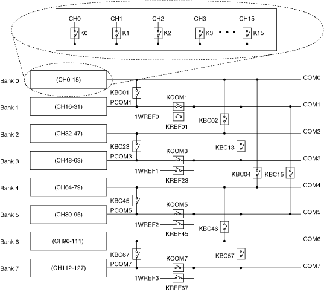

When using the NI PXI-2530/2530B in the independent topology, connect your signals using the NI TB-2630/2630B terminal block. Select this topology to utilize the full routing capabilities of the NI PXI-2530/2530B.
|
Note When using the independent topology, always select NONE in MAX for the terminal block. |

With the independent topology, you can let NI-SWITCH determine the path between two specified channels by setting the intermediate channels as reserved for routing and using the niSwitch Connect Channels VI or the niSwitch_Connect function, or you can control individual relays using the niSwitch Relay Control VI or the niSwitch_RelayControl function.
Refer to the NI PXI-2530 Signal Connections section for the NI PXI-2530 front connector pinout and NI TB-2630 terminal mapping. Refer to the NI PXI-2530B Signal Connections section for the NI PXI-2530B front connector pinout and NI TB-2630B terminal mapping.